Next Generation Sequencing for Evolutionary Functional Genomics
University of Zurich · Functional Genomics Center Zurich
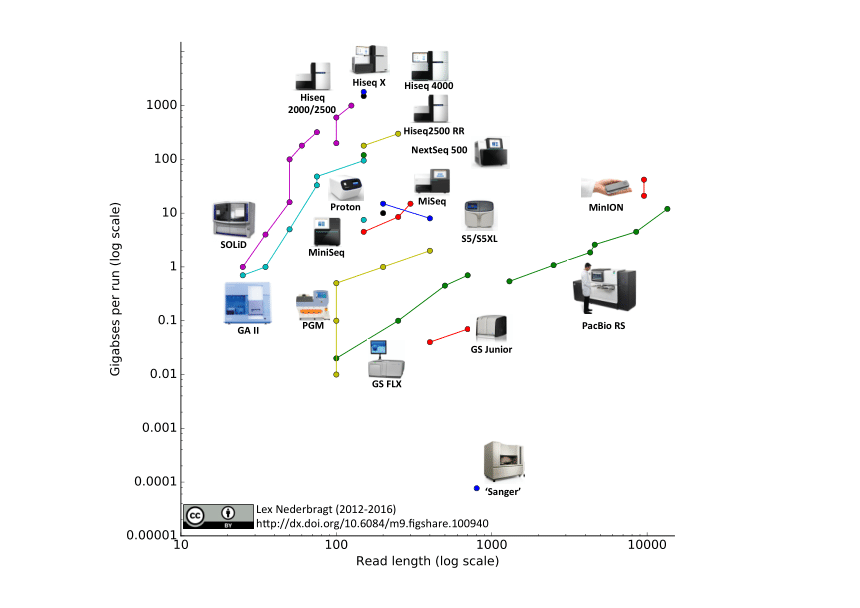
Two names for the same machines. "Next generation" was next about twenty years ago; papers that still use it mean nothing more than not Sanger. HTS is the term that ages better.
| What goes into the machine | What you get out | |
|---|---|---|
| DNA-seq | genomic DNA | genome sequence; variants (SNP, indel, structural) |
| RNA-seq | RNA, as cDNA | which genes are on, and how strongly |
| ChIP-seq | the DNA bound by one protein | where that protein sits on the genome |
| Metagenomics | DNA of a whole community | who is there, and in what proportion |
| Bisulfite-seq | DNA, C→U unless methylated | methylation, base by base |
Population genetics / genomics, epigenomics and phylogenetics are then built on top of these, not beside them.
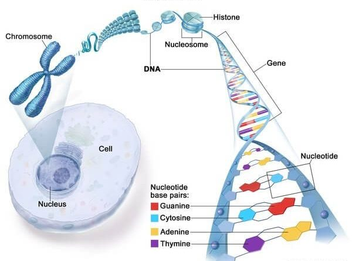
https://whereismap.net/where-is-dna-found-in-a-human-cell-what-is-a-gene/
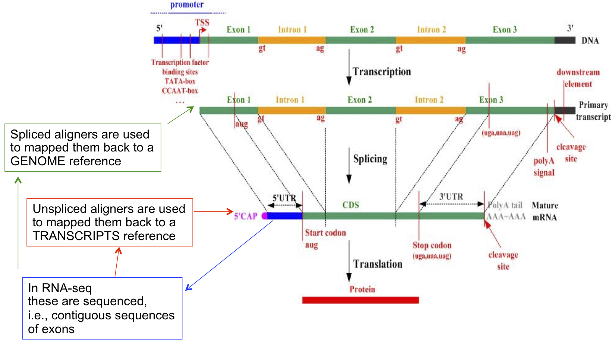
Almost none of it is coding sequence. That is the fact this course keeps running into.
3.1 Gb — the first complete assembly, T2T-CHM13 v2.0, is 3,117,292,070 bp over chromosomes 1–22, X, Y and the mitochondrion (GCA_009914755.4, read 13 Sep 2026). The 3,055 Mb in Nurk et al., Science 376:44–53 (2022) is v1.1, which has no Y: the CHM13 cell line is 46,XX, and the Y was finished later from a second donor. The textbook 3.2 Gb is the same quantity, rounded up; GRCh38 before it left about 8 % of the genome unresolved and carried that part as runs of N. · 19,442: GENCODE release 50, gencodegenes.org/human/stats.html, read 13 Sep 2026; the same release lists 35,885 lncRNA genes and 14,702 pseudogenes. · ~1.5 %: International Human Genome Sequencing Consortium, Nature 409:860–921 (2001); counting strict CDS only, ENCODE puts it at 1.2 %.
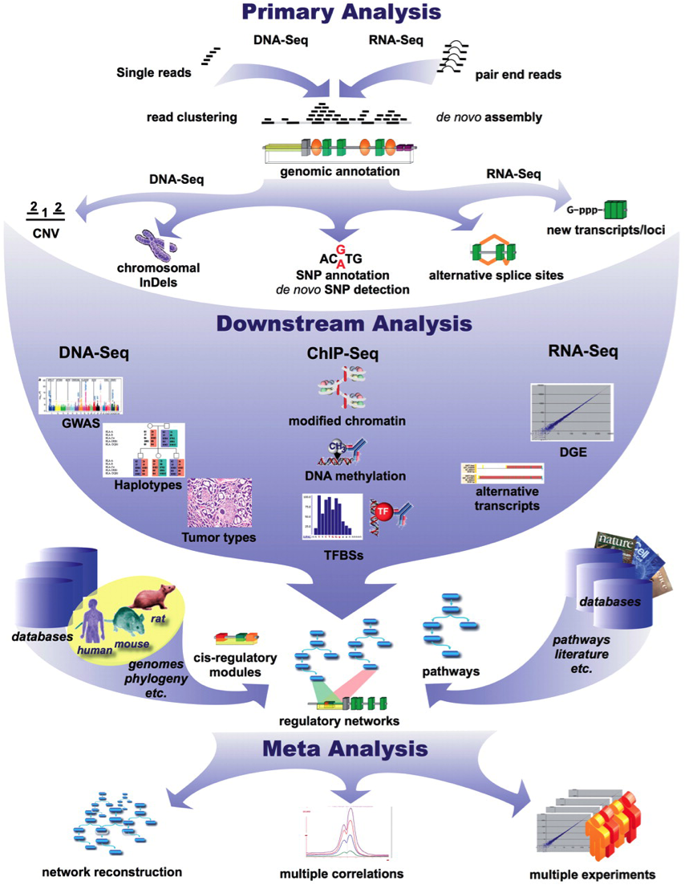
- NGS data analysis has different levels
e.g. Illumina HiSeq (fastq file)
@HWI-ST1357:71:D2FNTACXX:4:1101:1667:2141 1:N:0:CGA
GCTGCAACTAACGGCATCTGAGTTACCCATTCAAATTTTTCGCGGCTGTGT
+
@@@DADBEHDCFD8:@EBHICGAC?4EG@FDHGDHGIIII??@?FA;B=CE
@HWI-ST1357:71:D2FNTACXX:4:1101:1664:2223 1:N:0:CGA
TGTTGGTTGAGGAGGGTATGGAGGAGGAGGGTAAGCTGACGATAGCGGAGG
+How do you process the sequenced data?
How do you deal with these issues?
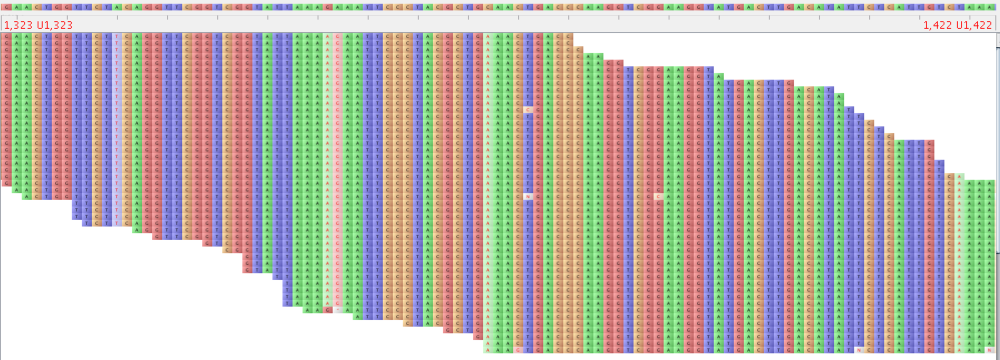
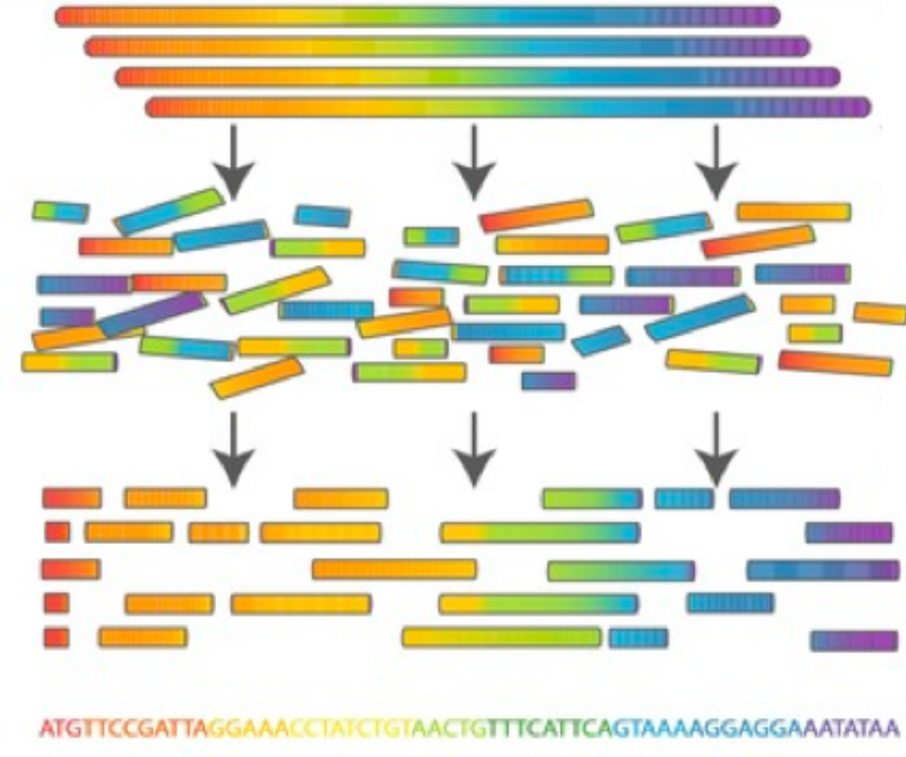
| Tool | Built for | Note |
|---|---|---|
| hifiasm | PacBio HiFi, also ONT | the common choice for a genome today |
| Canu / HiCanu | PacBio, ONT long reads | older and slower, still a reference point |
| Trinity | Illumina RNA-seq | assembles a transcriptome, not a genome |
| Tool | Reads | Splice-aware? | Mostly used for |
|---|---|---|---|
| STAR | short | yes | RNA-seq — this course |
| HISAT2 | short | yes | RNA-seq, far less memory |
| Bowtie2 | short | no | DNA, ChIP-seq, amplicons |
| BWA(-MEM) | short and long | no | DNA, variant calling |
STAR: https://github.com/alexdobin/STAR · HISAT2: http://daehwankimlab.github.io/hisat2/ · Bowtie2: http://bowtie-bio.sourceforge.net/bowtie2/index.shtml · BWA: http://bio-bwa.sourceforge.net/
your teacher is in front of you — claude, on fgcz-kl-004
It may read the course data because that data is public — DDBJ PRJDB4054 and TAIR10. Almost nothing else on that machine is.
You installed it yesterday, in the AI agents session of 17 September. ChatGPT, Gemini, Perplexity and the rest are still one browser tab away, and still useful — but they cannot open /scratch/EEE338_2026/, and this one can.
RNA-seq — transcriptomics · DNA-seq — genomics
Fragments of cDNA, counted per gene. What comes out is a proportion of one library, not an amount of RNA.
What it is for: gene expression analysis, and transcript discovery.
rRNA at 80–90 %: Zhao et al., Scientific Reports 8 (2018), doi:10.1038/s41598-018-23226-4. The middle and right panels are what Wednesday 23 September is about.
Shear the genome, sequence a few million fragments, put them back. What you get is coverage — how many times each position was read. A variant, a contig, a copy number are all inferences drawn from it.
“The complete sequence” is the goal, not the result: GRCh38 carried about 8 % of the human genome as N for a decade.
Mapping / Alignment
De novo Assembly
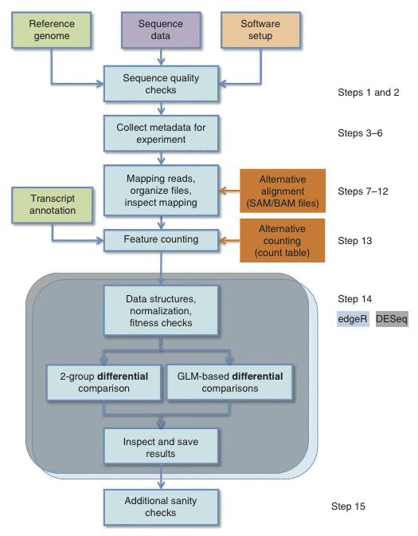
Simon Anders, et al., Count-based differential expression analysis of RNA sequencing data using R and Bioconductor, Nature Protocols, 2013, 8(9), 1765
If you DO NOT have a reference genome
The assembled transcriptome becomes the reference you did not have. From there on it looks like the previous slide — except that the reference is now something you made, and can be wrong.
If you DO NOT have a genome reference
If you HAVE a genome reference
Thursday 24 September: de novo genome assembly and SNP calling, then the GATK exercise.
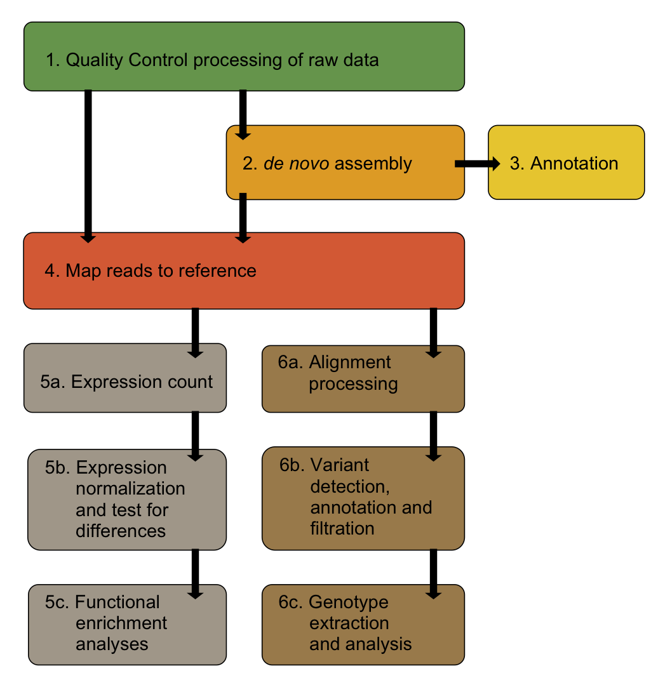
Quality control
is necessary in any case
and the data formats it reads · FASTQ, FASTA, Phred
Reading the FASTQ before you trust it. By itself it changes nothing — it is where you decide whether anything needs changing.
e.g. Illumina HiSeq (fastq file)
| Platform | Representative model / chemistry | Typical per-base error | Cost, order of magnitude |
|---|---|---|---|
| Illumina (short read) | NovaSeq X / X Plus, 2×150 | ~0.1 % (≈Q30) | $10–20 per Gb |
| MGI / BGI (short read) | DNBSEQ-T7, Standard MPS 2.0 | ~0.1 % (≈Q30) | $5–10 per Gb |
| PacBio HiFi (long read, CCS) | Revio | ≤0.1 % (median ≥Q30) | $100–200 per Gb |
| Oxford Nanopore, simplex | R10.4.1 + Kit 14 | ~1–0.4 % (Q20–Q24) | $40–60 per Gb |
| Oxford Nanopore, duplex | R10.4.1 + Kit 14 | ~0.1 % (≈Q30) | $100–200 per Gb |
Accuracy is as the vendors state it: PacBio gives median HiFi read quality ≥Q30 with 90 % of bases Q30+ (pacb.com/revio); Oxford Nanopore gives Q20+ simplex — 99.0 to 99.6 % modal depending on run speed — and ≈Q30 duplex for R10.4.1 + Kit 14 (nanoporetech.com); Illumina defines Q30 as one error in 1,000 bases. Read 13 Sep 2026. Note that nanopore duplex reads are only a fraction of a run's output. Costs are an order of magnitude only: list prices differ by provider, country and year, and no vendor-independent series has been published since NHGRI stopped updating its cost-per-megabase data in 2022 (Wetterstrand KA, genome.gov/sequencingcostsdata).
| Line | What it is | |
|---|---|---|
| 1 | @ and then the identifier |
instrument, run, lane, tile, coordinates |
| 2 | the sequence | A C G T, and N where the machine gave up |
| 3 | + |
a separator; older files repeated line 1 after it |
| 4 | the quality | one character per base of line 2 |
Nucleotides (Arabidopsis thaliana)
>AT1G51370.2 | F-box domains-containing protein
ATGGTGGGTGGCAAGAAGAAAACCAAGATATGTGACAAAGTGTCACATG
TTTGATATCTGAAATACTTTTTCATCTTTCTACCAAGGACTCTGTCAGA
TTTGGCAATCGGTTCCTGGATTGGACTTAGACCCCTACGCATCCTCAAANo base quality information
@SEQ_ID
GATTTGGGGTTCAAAGCAGTATCGATCAAATAGTAAATCCATTTGTTCAAC
+
!''*((((***+))%%%++)(%%%%).1***-+*''))**55CCF>>>>>>C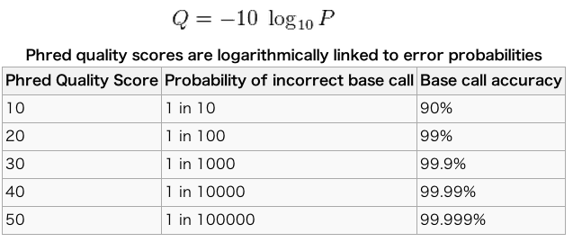
Q = −10 log10 P
| Q | error P | accuracy |
|---|---|---|
| 10 | 1 in 10 | 90 % |
| 20 | 1 in 100 | 99 % |
| 30 | 1 in 1,000 | 99.9 % |
| 40 | 1 in 10,000 | 99.99 % |
"Phred quality scores Q are defined as a property which is logarithmically related to the base-calling error probabilities." (Wikipedia)
Scale and name come from the phred base caller: Ewing & Green, "Base-calling of automated sequencer traces using phred. II. Error probabilities", Genome Research 8:186–194 (1998); and Ewing, Hillier, Wendl & Green, part I, same volume, 175–185.
33:! 34:" 35:# 36:$ 37:% 38:& 39:' 40:(
41:) 42:* 43:+ 44:, 45:- 46:. 47:/ 48:0
49:1 50:2 51:3 52:4 53:5 54:6 55:7 56:8
57:9 58:: 59:; 60:< 61:= 62:> 63:? 64:@
65:A 66:B 67:C 68:D 69:E 70:F 71:G 72:H
73:I 74:J 75:K 76:L 77:M 78:N 79:O 80:P
81:Q 82:R 83:S 84:T 85:U 86:V 87:W 88:X
89:Y 90:Z 91:[ 92:\ 93:] 94:^ 95:_ 96:`
97:a 98:b 99:c 100:d 101:e 102:f 103:g 104:h
105:i 106:j 107:k 108:l 109:m 110:n 111:o 112:p
113:q 114:r 115:s 116:t 117:u 118:v 119:w 120:x
121:y 122:z 123:{ 124:| 125:} 126:~The quality line carries one character per base. A number such as 30 does not fit in one character, so it is shifted by 33 and written as ASCII.
character = chr(Quality + 33)Why 33? Because ASCII 0–31 are control characters and 32 is the space — none of them can sit safely in a line of a text file.
e.g. Phred quality score=30 ???
'?'
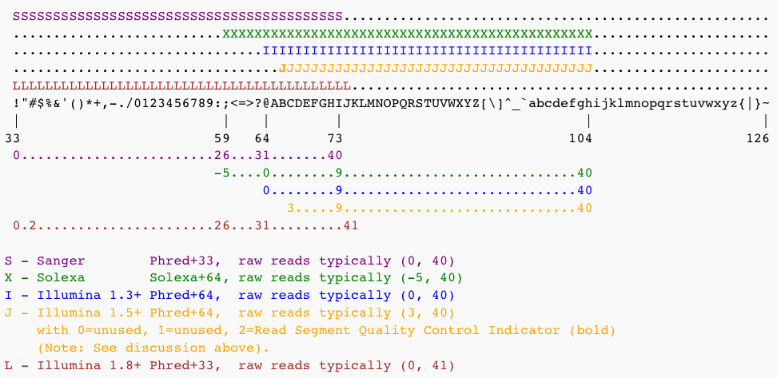
Encoding table: en.wikipedia.org/wiki/FASTQ_format
Calculate the average quality of the sequence (average quality score per base)
@SEQ_ID
GATTT
+
!''*(! = 33-33 = 0
' = 39-33 = 6
' = 39-33 = 6
* = 42-33 = 9
( = 40-33 = 7Average quality score = (0+6+6+9+7)/5 = 5.6
What is the base call accuracy of the character A, ! and I ?
(Illumina 1.9 Phred Quality Score)
A = 65 - 33 = 32
P = 10^(32/-10) = 10^(-3.2) = 0.00063...
Accuracy = 99.9369...%
! = 33 - 33 = 0
P = 10^(0/-10) = 10^0 = 1
Accuracy = 0.0%
I = 73 - 33 = 40
P = 10^(40/-10) = 10^(-4) = 0.0001
Accuracy = 99.99%| Tool | What it does | Does it change the reads? |
|---|---|---|
| FastQC | one HTML report per FASTQ file | no — it only reports |
| fastp | report and trimming in one pass | yes |
| Trimmomatic | trimming and filtering (Java) | yes |
| MultiQC | merges many reports into one page | no |
FastQC: https://www.bioinformatics.babraham.ac.uk/projects/fastqc/ · fastp: https://github.com/OpenGene/fastp · Trimmomatic: http://www.usadellab.org/cms/?page=trimmomatic · MultiQC: https://multiqc.info/
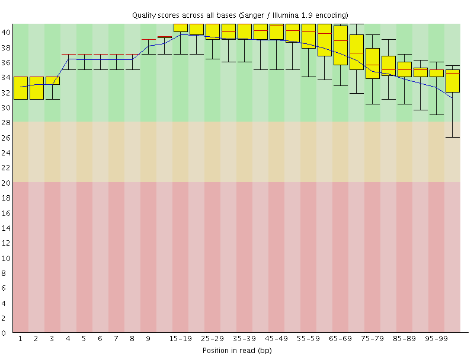
red:median, blue:average, box:25-75%, bar:10-90%
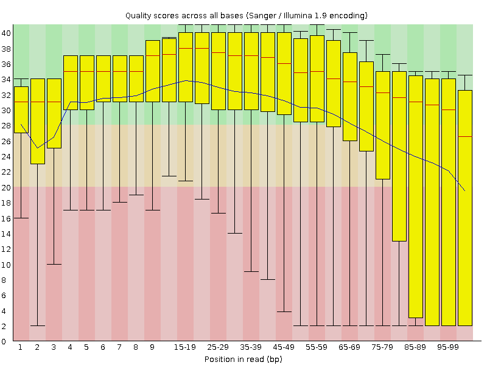
red:median, blue:average, box:25-75%, bar:10-90%
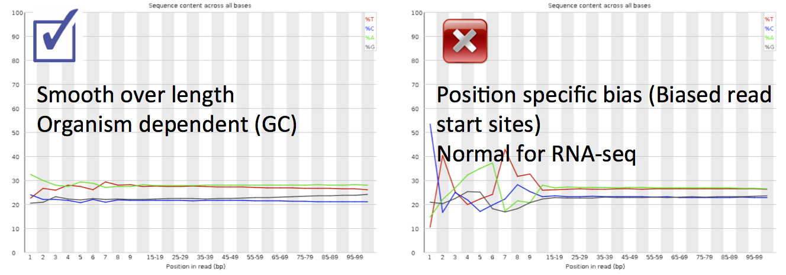
Hansen, Brenner & Dudoit, "Biases in Illumina transcriptome sequencing caused by random hexamer priming", Nucleic Acids Research 38(12):e131 (2010).
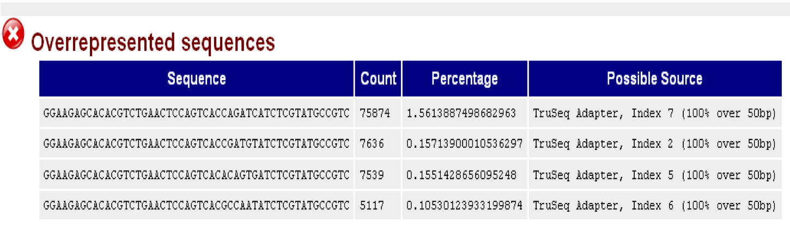
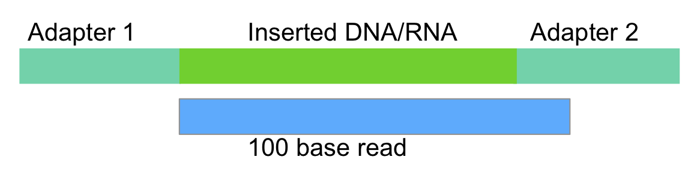
Arabidopsis halleri, Leaf, RNA, Ion PGM
Metrosideros polymorpha, DNA, Illumina HiSeq
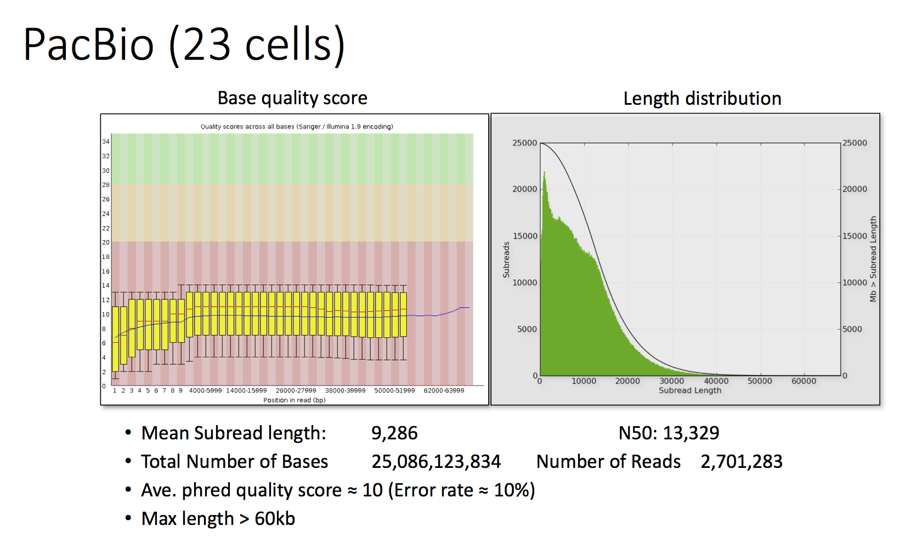
Arabidopsis halleri, Leaf, RNA, Ion PGM
After trimming (by Trimmomatic)
If other species DNA/RNA is contaminated,
FastqScreen: http://www.bioinformatics.babraham.ac.uk/projects/fastq_screen/
A bug mRNA contamination in A. halleri RNAseq
|
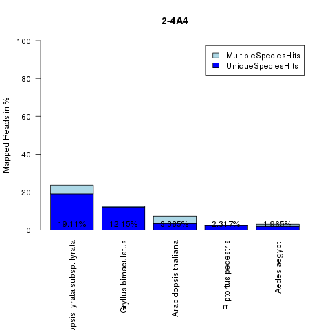 |
Before NGS data processing
If bad quality,